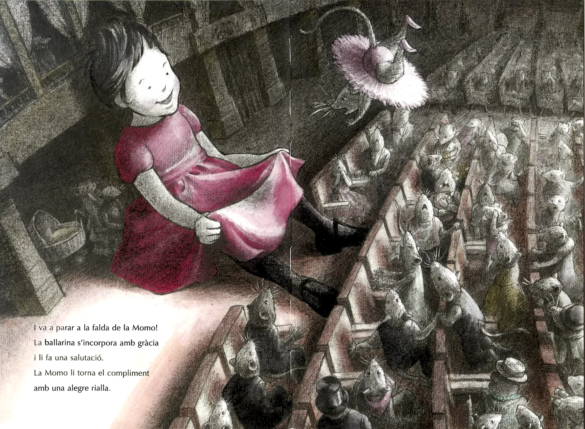
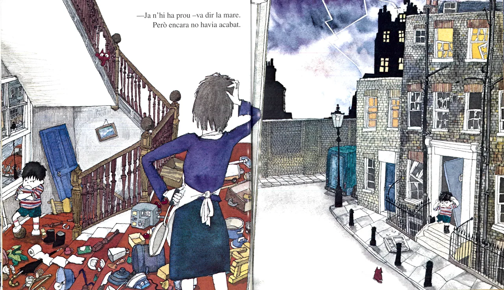

Pas 4. La relació text-imatge
Avui dia la majoria de llibres infantils tenen il·lustracions. Fins i tot s’ha creat un gènere anomenat àlbum il·lustrat.
Mira't aquesta doble pàgina d'un àlbum il·lustrat: què creus que dona més informació, el text o la imatge?
A l'àlbum il·lustrat s'ofereix la possibilitat al lector de llegir a través de dos codis: el textual i el visual. La imatge, als àlbums, és tan narrativa com el text.
Els tres tipus de relacions que, a grans trets, es poden establir entre el text i la imatge són l’acord, la contradicció i l’extensió:

Miyakosh, A. Concert de piano. Barcelona: Ekaré, 2013.
Acord
El text i la imatge narren el mateix, però sense que es produeixi redundància o repetició.
Sovint, la imatge ofereix informacions que ens ajuden a concretar aspectes com el caràcter dels personatges, l’ambientació, els detalls...

Hiawyn, O.; Kitamura, S. (il.). En Ferran enfadat. Barcelona: Ekaré, 2010.
Extensió
La imatge va més enllà del que diu el text i, per tant, mostra una extensió del significat que estrictament tenen les paraules escrites. És a dir, el que es veu a les imatges amplia clarament el que ha dit el text.
En tots tres casos, el text i la imatge estableixen una col·laboració mútua: es complementen, contrasten, es contraposen i s'alimenten entre si. Tots dos contribueixen a construir el sentit de la història i parlen al lector, interpel·lant l'ull que llegeix i l'ull que mira. L'un compensa les limitacions de l'altre i viceversa.
A més del text i de la imatge, hi ha altres elements que poden ajudar a explicar les històries infantils?
Darrerament, la literatura infantil digital incorpora altres elements o recursos per construir les històries, com poden ser el so, el moviment, les possibilitats d’interacció o la hipertextualitat.
Mira’t aquest breu vídeo d’una aplicació per a iPad de l’autor i il·lustrador Oliver Jeffers on es pot veure la transformació de l’àlbum The heart and the bottle [El corazón y la botella] i alguns dels efectes esmentats.
Si el vols veure en paper, pots buscar-lo en una biblioteca o llibreria en la seva edició catalana o castellana.
Ves a la biblioteca que tinguis més a prop de casa i estigues una estona remenant àlbums a la secció Infantil i juvenil.
Tria’n un que et sembli interessant per les relacions que s'hi estableixen entre el text i la imatge. Selecciona una de les imatges de l’àlbum que et sembli representativa, fes-ne la fotografia, publica-la i comenta-la al fòrum. No et descuidis d’indicar també les dades principals del llibre: títol, autoria i editorial.
Envia’ns, a més, una fotografia de la biblioteca on has anat.
{kind=link}
{kind=link}
{kind=link}